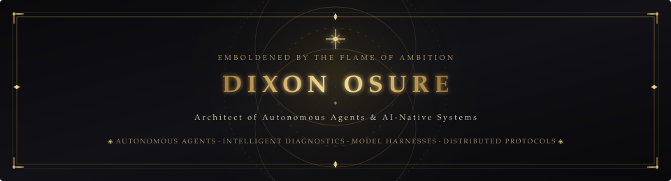

“Foul seeker... emboldened by the flame of ambition. Tread the lands where artificial intellect is forged not in fleeting incantations, but in resilient, autonomous systems.”
◈ The Codex
I am Dixon Osure, a software craftsman and AI systems engineer forging autonomous agents, intelligent diagnostic engines, and resilient distributed platforms.
Where many treat artificial intelligence as mere novelty, I treat it as an arcane discipline—engineering deterministic harnesses around probabilistic models. My focus lies in constructing agentic tool-calling systems, neural voice-preservation engines, and automated diagnostic oracles that parse high-entropy telemetry into actionable truth.
◈ Arcane Disciplines & Armaments
A catalog of the models, agent architectures, and forged armaments wielded across my journeys:
| Realm |
Proficiencies & Instruments |
| Agentic Systems & Autonomy |
Autonomous Tool-Calling · Agent Harnesses · Multi-Agent Orchestration · Memory & Context Engineering · Telephony Sessions |
| Model Foundries & Intelligence |
watsonx.ai · IBM Granite · Anthropic Claude SDK · Gemini API · DeepSeek / OpenAI · Local Inference (Ollama) |
| Languages of the Forge |
Python · Go · TypeScript · JavaScript · SQL |
| Infrastructure & Runtimes |
Linux Kernel Environments · Docker · CI/CD Telemetry · Node.js · Fastify / Next.js · Bitcoin Lightning Network |
◈ Remembrances of Conquest — AI-Native Constructs
An AI creative partner engineered to measure generic drift and preserve authentic human timbre.
- Arcane Core: Python · IBM Bob · IBM Granite · watsonx.ai
- Evaluates drafts against semantic homogeneity metrics; steers generative completions to preserve the creator's idiosyncratic cadence and voice rather than succumbing to synthetic blandness.
A Go-powered automated diagnostician parsing build logs and synthesizing targeted remedies.
- Arcane Core: Go · Telemetry Ingestion · Pattern Recognition · Automated Root-Cause Synthesis
- Ingests high-entropy CI/CD execution traces, correlates cryptic compiler and test failures against known failure modes, and surfaces instant root-cause diagnostics—reducing 30-minute investigations to 30-second remediations.
An intelligent procurement oracle for algorithmic commercial evaluation and quotation analysis.
- Arcane Core: TypeScript · Multimodal Document Parsing · Algorithmic Variance Scoring
- Automates supplier bid normalization and multi-factor tender comparison for SMBs, transforming unstructured quotations into structured, data-driven procurement decisions.
An adaptive autonomous agent extended into low-bandwidth telecom rails.
- Arcane Core: Python · Agentic Tool Execution · USSD Telephony Protocols
- Bridges autonomous agent capabilities to offline mobile environments, allowing session-based interactive workflows over cellular telecom networks without requiring internet connectivity.
A universal multi-model execution harness for terminal-based developer agents.
- Arcane Core: TypeScript · LLM Tool-Calling Shims · Model Routing (Gemini, DeepSeek, Ollama, OpenAI)
- Decouples high-agency developer CLI workflows from proprietary model vendor lock-in, enabling multi-agent execution across local and cloud inference backends.
Programmable, milestone-released settlement rails for autonomous actors.
- Arcane Core: TypeScript · Bitcoin Lightning Network (LND) · Micro-Settlement Primitives
- Cryptographic payment execution layer built for deterministic, milestone-gated compensation—providing the settlement substrate needed for autonomous agents and decentralized workflows.
◈ Sites of Grace
Where communication channels rest and collaborations may be summoned:
- E-Mail: jamesdickens015@gmail.com
- Nexus: Active across listed repositories, issues, and pull requests
- Summons: Open to high-agency engineering roles in Autonomous Agents, Applied AI Systems, and Intelligent Infrastructure